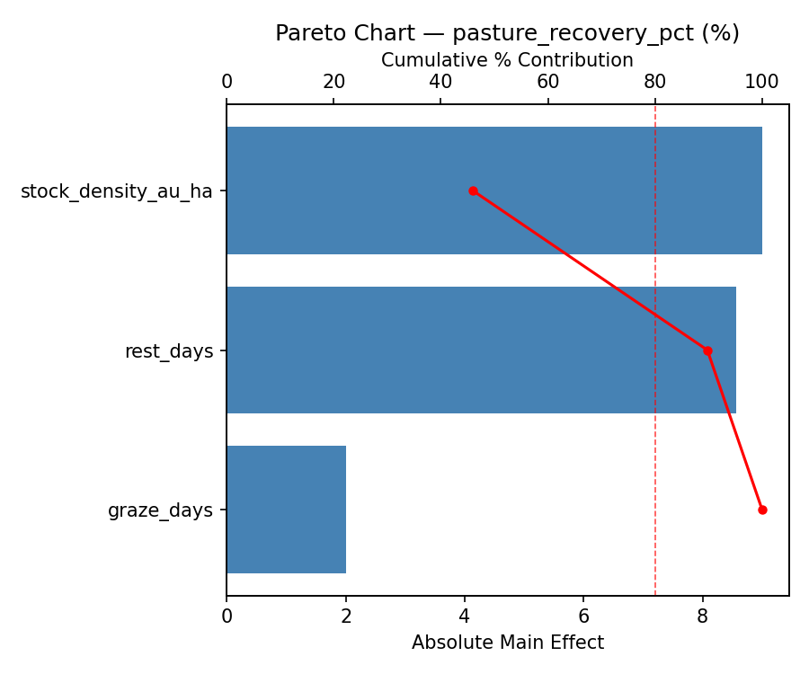
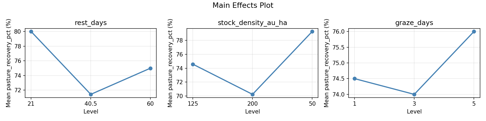
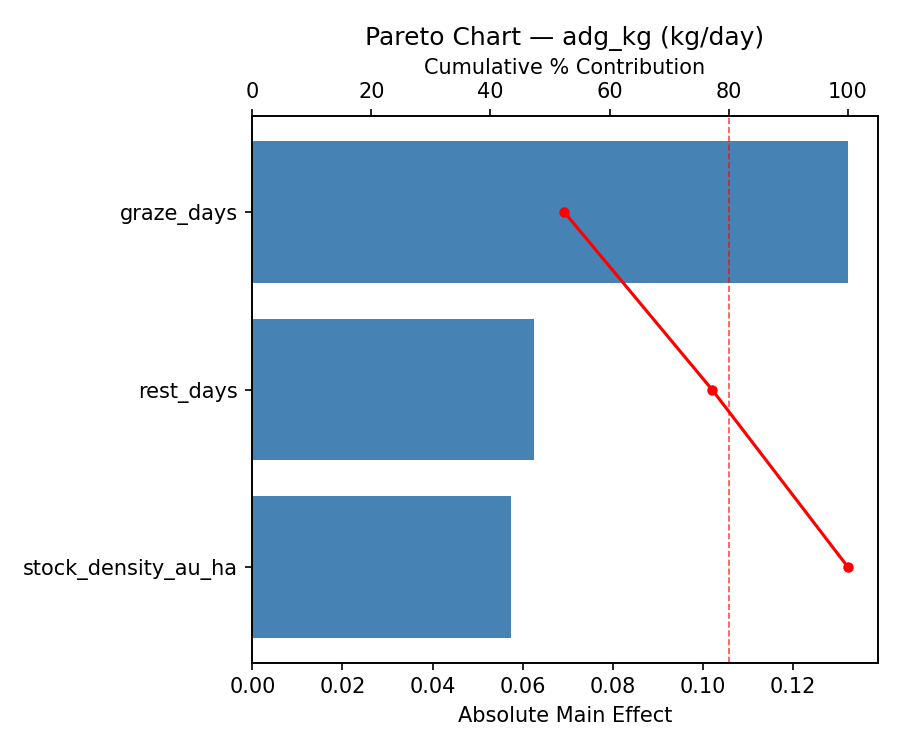
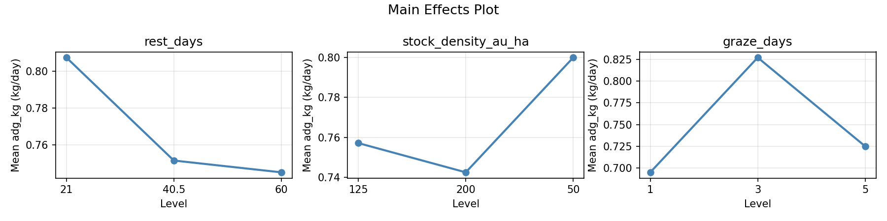
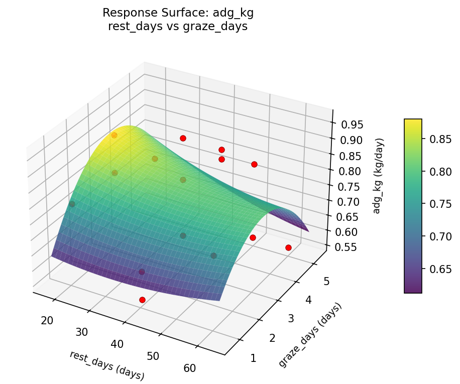
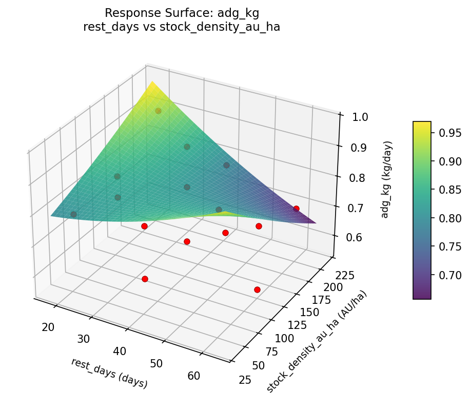
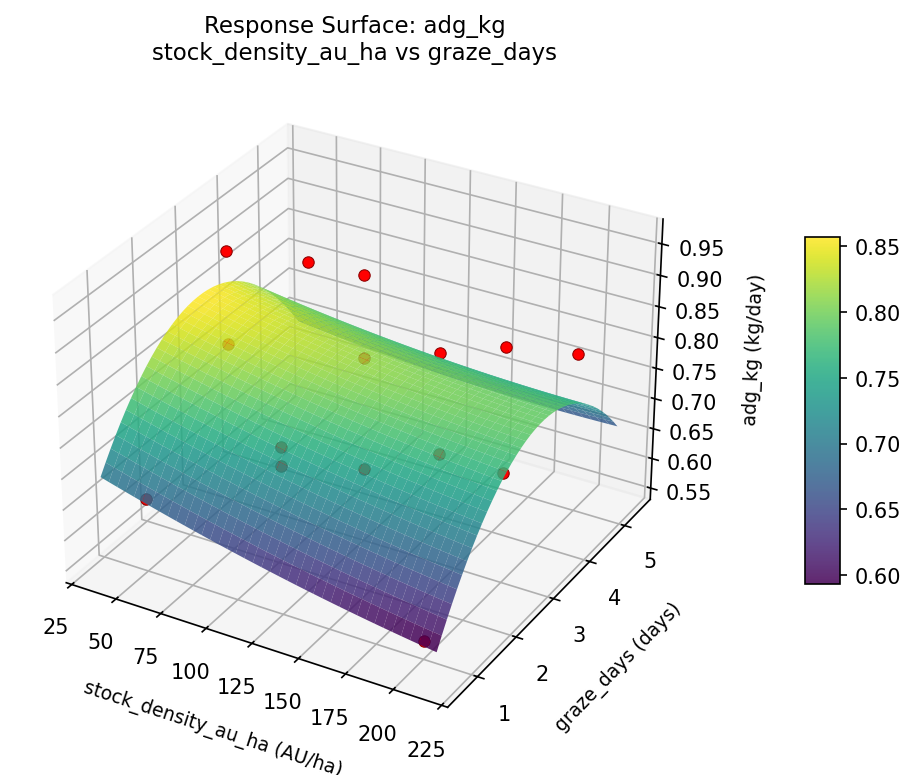
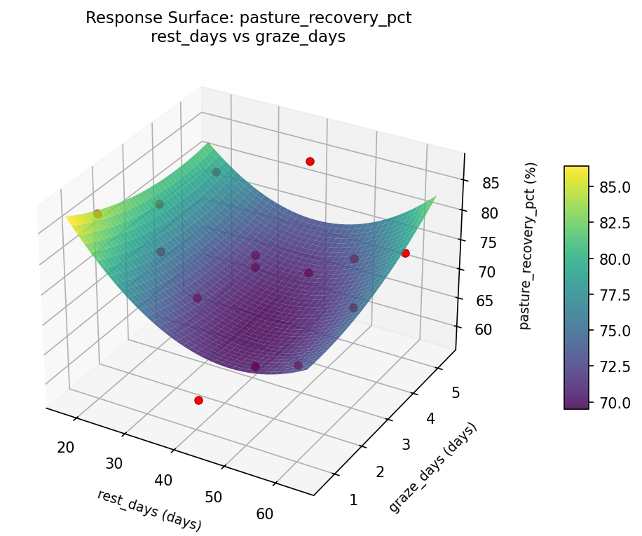
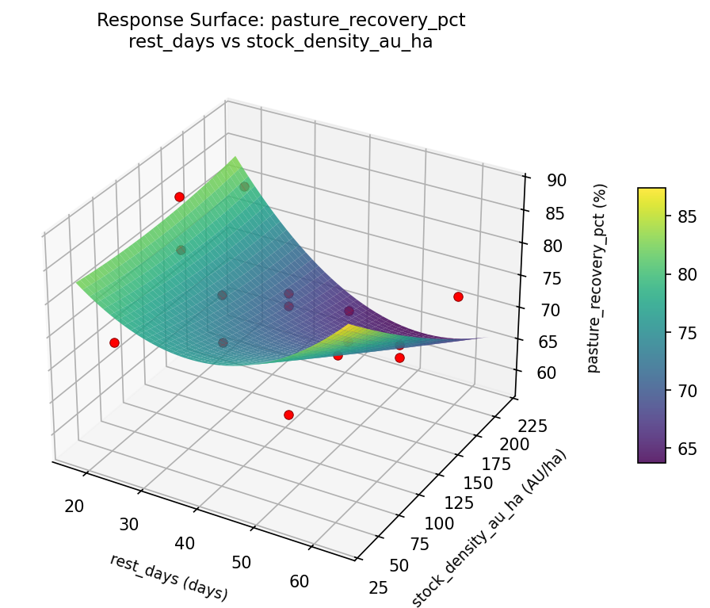
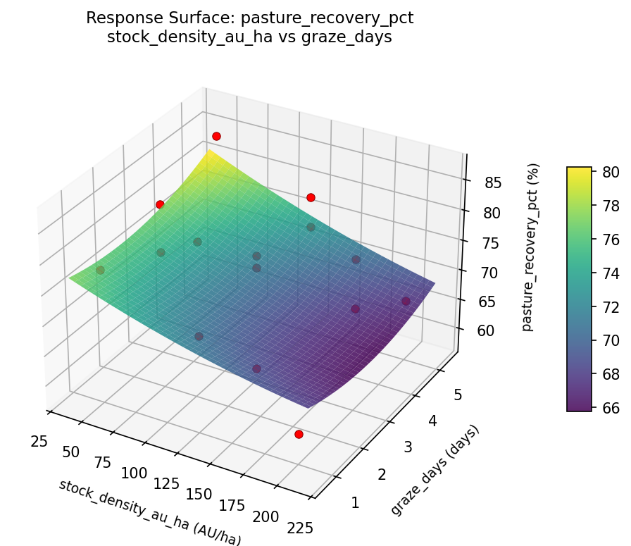

Summary
This experiment investigates rotational grazing pattern. Box-Behnken design to maximize pasture recovery and animal weight gain by tuning paddock rest days, stocking density, and grazing duration.
The design varies 3 factors: rest days (days), ranging from 21 to 60, stock density au ha (AU/ha), ranging from 50 to 200, and graze days (days), ranging from 1 to 5. The goal is to optimize 2 responses: pasture recovery pct (%) (maximize) and adg kg (kg/day) (maximize). Fixed conditions held constant across all runs include cattle = beef, paddock count = 10.
A Box-Behnken design was chosen because it efficiently fits quadratic models with 3 continuous factors while avoiding extreme corner combinations — requiring only 15 runs instead of the 8 needed for a full factorial at two levels.
Quadratic response surface models were fitted to capture potential curvature and factor interactions. The RSM contour plots below visualize how pairs of factors jointly affect each response.
Key Findings
For pasture recovery pct, the most influential factors were stock density au ha (46.0%), rest days (43.8%), graze days (10.2%). The best observed value was 87.0 (at rest days = 40.5, stock density au ha = 125, graze days = 3).
For adg kg, the most influential factors were graze days (52.4%), rest days (24.8%), stock density au ha (22.8%). The best observed value was 0.96 (at rest days = 21, stock density au ha = 200, graze days = 3).
Recommended Next Steps
- Run confirmation experiments at the predicted optimal settings to validate the model.
- Consider whether any fixed factors should be varied in a future study.
Experimental Setup
Factors
| Factor | Low | High | Unit |
|---|
rest_days | 21 | 60 | days |
stock_density_au_ha | 50 | 200 | AU/ha |
graze_days | 1 | 5 | days |
Fixed: cattle = beef, paddock_count = 10
Responses
| Response | Direction | Unit |
|---|
pasture_recovery_pct | ↑ maximize | % |
adg_kg | ↑ maximize | kg/day |
Configuration
{
"metadata": {
"name": "Rotational Grazing Pattern",
"description": "Box-Behnken design to maximize pasture recovery and animal weight gain by tuning paddock rest days, stocking density, and grazing duration"
},
"factors": [
{
"name": "rest_days",
"levels": [
"21",
"60"
],
"type": "continuous",
"unit": "days"
},
{
"name": "stock_density_au_ha",
"levels": [
"50",
"200"
],
"type": "continuous",
"unit": "AU/ha"
},
{
"name": "graze_days",
"levels": [
"1",
"5"
],
"type": "continuous",
"unit": "days"
}
],
"fixed_factors": {
"cattle": "beef",
"paddock_count": "10"
},
"responses": [
{
"name": "pasture_recovery_pct",
"optimize": "maximize",
"unit": "%"
},
{
"name": "adg_kg",
"optimize": "maximize",
"unit": "kg/day"
}
],
"settings": {
"operation": "box_behnken",
"test_script": "use_cases/294_cattle_grazing/sim.sh"
}
}
Experimental Matrix
The Box-Behnken Design produces 15 runs. Each row is one experiment with specific factor settings.
| Run | rest_days | stock_density_au_ha | graze_days |
|---|
| 1 | 40.5 | 50 | 1 |
| 2 | 40.5 | 125 | 3 |
| 3 | 60 | 125 | 5 |
| 4 | 60 | 125 | 1 |
| 5 | 40.5 | 125 | 3 |
| 6 | 40.5 | 125 | 3 |
| 7 | 21 | 125 | 5 |
| 8 | 60 | 50 | 3 |
| 9 | 40.5 | 50 | 5 |
| 10 | 60 | 200 | 3 |
| 11 | 21 | 125 | 1 |
| 12 | 40.5 | 200 | 5 |
| 13 | 21 | 50 | 3 |
| 14 | 21 | 200 | 3 |
| 15 | 40.5 | 200 | 1 |
Step-by-Step Workflow
1
Preview the design
$ python doe.py info --config use_cases/294_cattle_grazing/config.json
2
Generate the runner script
$ python doe.py generate --config use_cases/294_cattle_grazing/config.json \
--output use_cases/294_cattle_grazing/results/run.sh --seed 42
3
Execute the experiments
$ bash use_cases/294_cattle_grazing/results/run.sh
4
Analyze results
$ python doe.py analyze --config use_cases/294_cattle_grazing/config.json
5
Get optimization recommendations
$ python doe.py optimize --config use_cases/294_cattle_grazing/config.json
6
Generate the HTML report
$ python doe.py report --config use_cases/294_cattle_grazing/config.json \
--output use_cases/294_cattle_grazing/results/report.html
Real-World Experiment Workflow
ℹ
Physical Farm & Livestock Experiment? Use the Manual Workflow
Livestock experiments involve real animals, feed, facilities, and biological responses that can't be simulated. The simulation script above is for demonstration. For your real experiments, use record, status, and export-worksheet.
$ python doe.py export-worksheet --config use_cases/294_cattle_grazing/config.json \
--format csv --output worksheet.csv
$ python doe.py status --config use_cases/294_cattle_grazing/config.json
$ python doe.py record --config use_cases/294_cattle_grazing/config.json --run 1
$ python doe.py analyze --config use_cases/294_cattle_grazing/config.json --partial
$ python doe.py analyze --config use_cases/294_cattle_grazing/config.json
$ python doe.py optimize --config use_cases/294_cattle_grazing/config.json
$ python doe.py report --config use_cases/294_cattle_grazing/config.json \
--output report.html
✔
Works Without a Test Script
The analysis pipeline doesn't care how results were produced. Record your measurements with record, and the full analysis, optimization, and reporting pipeline works identically. Use --partial to get early insights before all runs are complete.
Features Exercised
| Feature | Value |
|---|
| Design type | box_behnken |
| Factor types | continuous (all 3) |
| Arg style | double-dash |
| Responses | 2 (pasture_recovery_pct ↑, adg_kg ↑) |
| Total runs | 15 |
Analysis Results
Generated from actual experiment runs using the DOE Helper Tool.
Response: pasture_recovery_pct
Top factors: stock_density_au_ha (46.0%), rest_days (43.8%), graze_days (10.2%).
Pareto Chart

Main Effects Plot

Response: adg_kg
Top factors: graze_days (52.4%), rest_days (24.8%), stock_density_au_ha (22.8%).
Pareto Chart

Main Effects Plot

Response Surface Plots
3D surfaces fitted with quadratic RSM. Red dots are observed data points.
adg kg rest days vs graze days

adg kg rest days vs stock density au ha

adg kg stock density au ha vs graze days

pasture recovery pct rest days vs graze days

pasture recovery pct rest days vs stock density au ha

pasture recovery pct stock density au ha vs graze days

Full Analysis Output
RSM surface: rsm_pasture_recovery_pct_rest_days_vs_stock_density_au_ha.png
RSM surface: rsm_pasture_recovery_pct_rest_days_vs_graze_days.png
RSM surface: rsm_pasture_recovery_pct_stock_density_au_ha_vs_graze_days.png
RSM surface: rsm_adg_kg_rest_days_vs_stock_density_au_ha.png
RSM surface: rsm_adg_kg_rest_days_vs_graze_days.png
RSM surface: rsm_adg_kg_stock_density_au_ha_vs_graze_days.png
=== Main Effects: pasture_recovery_pct ===
Factor Effect Std Error % Contribution
--------------------------------------------------------------
stock_density_au_ha 9.0000 2.1014 46.0%
rest_days 8.5714 2.1014 43.8%
graze_days 2.0000 2.1014 10.2%
=== Summary Statistics: pasture_recovery_pct ===
rest_days:
Level N Mean Std Min Max
------------------------------------------------------------
21 4 80.0000 5.7735 73.0000 87.0000
40.5 7 71.4286 9.9139 58.0000 85.0000
60 4 75.0000 4.0825 72.0000 81.0000
stock_density_au_ha:
Level N Mean Std Min Max
------------------------------------------------------------
125 7 74.5714 8.7723 58.0000 87.0000
200 4 70.2500 8.6939 61.0000 81.0000
50 4 79.2500 5.0580 73.0000 85.0000
graze_days:
Level N Mean Std Min Max
------------------------------------------------------------
1 4 74.5000 10.9087 61.0000 87.0000
3 7 74.0000 7.8102 58.0000 81.0000
5 4 76.0000 8.0416 66.0000 85.0000
=== Main Effects: adg_kg ===
Factor Effect Std Error % Contribution
--------------------------------------------------------------
graze_days 0.1321 0.0319 52.4%
rest_days 0.0625 0.0319 24.8%
stock_density_au_ha 0.0575 0.0319 22.8%
=== Summary Statistics: adg_kg ===
rest_days:
Level N Mean Std Min Max
------------------------------------------------------------
21 4 0.8075 0.0750 0.7300 0.9100
40.5 7 0.7514 0.1373 0.5600 0.9600
60 4 0.7450 0.1572 0.5600 0.9400
stock_density_au_ha:
Level N Mean Std Min Max
------------------------------------------------------------
125 7 0.7571 0.1288 0.5600 0.9600
200 4 0.7425 0.1468 0.5600 0.9100
50 4 0.8000 0.1192 0.6500 0.9400
graze_days:
Level N Mean Std Min Max
------------------------------------------------------------
1 4 0.6950 0.1109 0.5600 0.8000
3 7 0.8271 0.1181 0.6500 0.9600
5 4 0.7250 0.1162 0.5600 0.8200
Pareto chart (pasture_recovery_pct): use_cases/294_cattle_grazing/results/analysis/pareto_pasture_recovery_pct.png
Pareto chart (adg_kg): use_cases/294_cattle_grazing/results/analysis/pareto_adg_kg.png
Main effects (pasture_recovery_pct): use_cases/294_cattle_grazing/results/analysis/main_effects_pasture_recovery_pct.png
Main effects (adg_kg): use_cases/294_cattle_grazing/results/analysis/main_effects_adg_kg.png
Optimization Recommendations
=== Optimization: pasture_recovery_pct ===
Direction: maximize
Best observed run: #8
rest_days = 40.5
stock_density_au_ha = 125
graze_days = 3
Value: 87.0
RSM Model (linear, R² = 0.1151, Adj R² = -0.1262):
Coefficients:
intercept +74.6667
rest_days -3.6250
stock_density_au_ha +0.2500
graze_days +0.3750
RSM Model (quadratic, R² = 0.5520, Adj R² = -0.2543):
Coefficients:
intercept +73.6667
rest_days -3.6250
stock_density_au_ha +0.2500
graze_days +0.3750
rest_days*stock_density_au_ha +3.5000
rest_days*graze_days -2.2500
stock_density_au_ha*graze_days -2.0000
rest_days^2 -1.9583
stock_density_au_ha^2 +7.7917
graze_days^2 -3.9583
Curvature analysis:
stock_density_au_ha coef=+7.7917 convex (has a minimum)
graze_days coef=-3.9583 concave (has a maximum)
rest_days coef=-1.9583 concave (has a maximum)
Notable interactions:
rest_days*stock_density_au_ha coef=+3.5000 (synergistic)
rest_days*graze_days coef=-2.2500 (antagonistic)
stock_density_au_ha*graze_days coef=-2.0000 (antagonistic)
Predicted optimum (from linear model):
rest_days = 21
stock_density_au_ha = 125
graze_days = 5
Predicted value: 78.6667
Model quality: Weak fit — consider adding center points or using a different design.
Factor importance:
1. stock_density_au_ha (effect: 8.5, contribution: 41.4%)
2. rest_days (effect: 7.2, contribution: 35.4%)
3. graze_days (effect: 4.8, contribution: 23.2%)
=== Optimization: adg_kg ===
Direction: maximize
Best observed run: #15
rest_days = 21
stock_density_au_ha = 200
graze_days = 3
Value: 0.96
RSM Model (linear, R² = 0.0193, Adj R² = -0.2482):
Coefficients:
intercept +0.7647
rest_days +0.0200
stock_density_au_ha -0.0063
graze_days -0.0087
RSM Model (quadratic, R² = 0.4806, Adj R² = -0.4543):
Coefficients:
intercept +0.7167
rest_days +0.0200
stock_density_au_ha -0.0063
graze_days -0.0088
rest_days*stock_density_au_ha -0.0075
rest_days*graze_days +0.0025
stock_density_au_ha*graze_days -0.0150
rest_days^2 +0.0417
stock_density_au_ha^2 +0.1292
graze_days^2 -0.0808
Curvature analysis:
stock_density_au_ha coef=+0.1292 convex (has a minimum)
graze_days coef=-0.0808 negligible curvature
rest_days coef=+0.0417 negligible curvature
Predicted optimum (from linear model):
rest_days = 60
stock_density_au_ha = 125
graze_days = 1
Predicted value: 0.7934
Model quality: Weak fit — consider adding center points or using a different design.
Factor importance:
1. stock_density_au_ha (effect: 0.1, contribution: 46.3%)
2. graze_days (effect: 0.1, contribution: 34.1%)
3. rest_days (effect: 0.1, contribution: 19.5%)